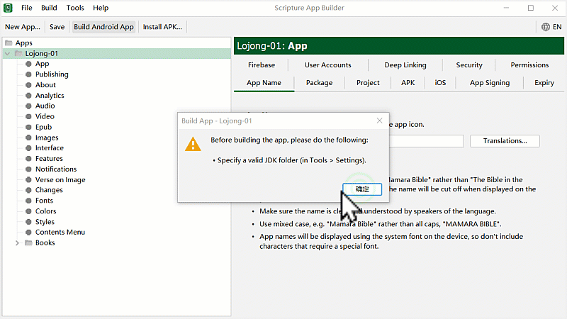
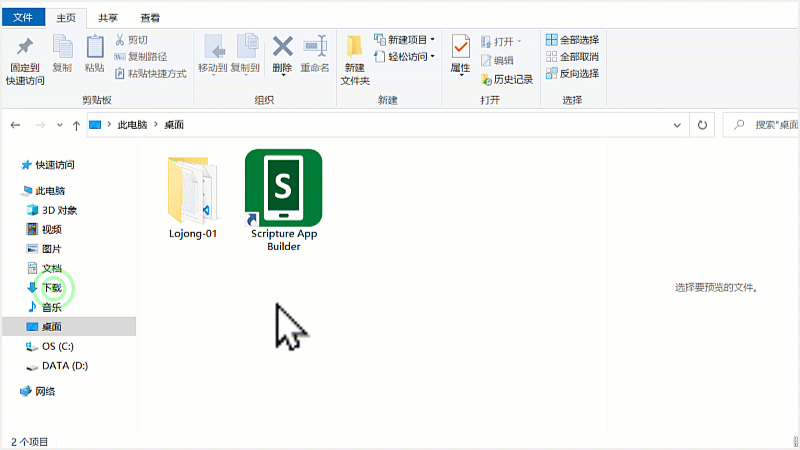
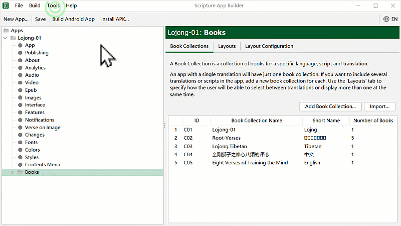
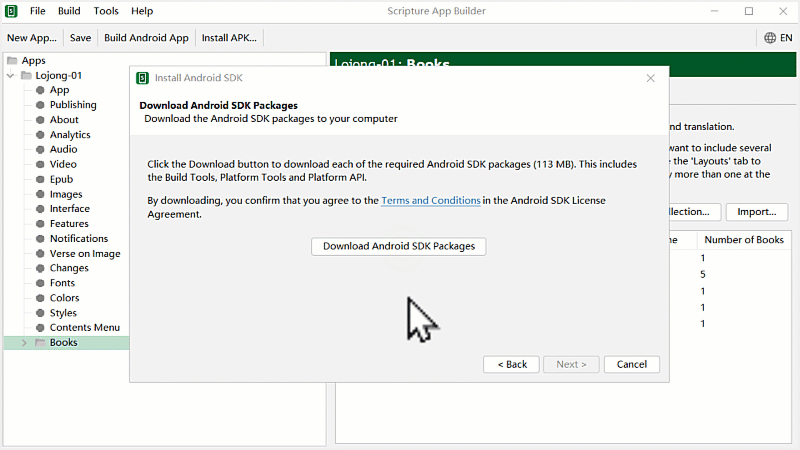
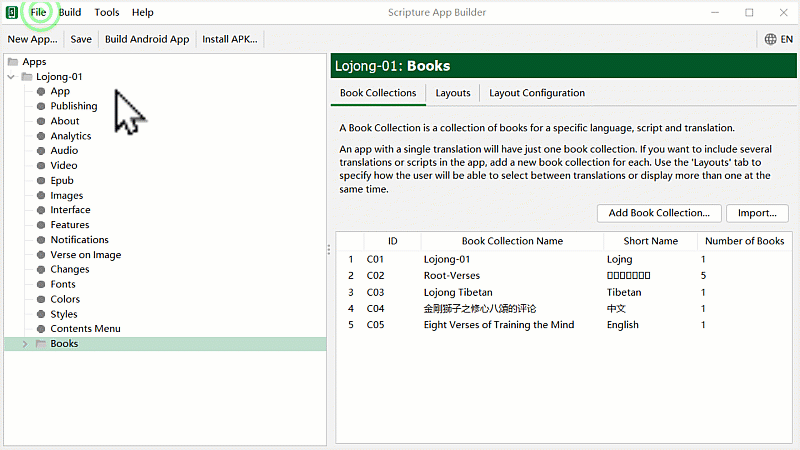

འདི་ནི་གཙུག་ལག་མཉེན་ཆས་སྒྲིག་སྟེགས་ཏེ་ Scripture App Builder (SAB) སྒེའུ་ཁུང་རྟགས་ཅན་གྱི་གློག་ཀླད་ནང་ཕབ་ལེན་དང་འཇུག་སྤྲོད་ཇི་ལྟར་བྱ་ཚུལ་ངོ་སྤྲོད་བྱས་ཡོད། མཉེན་ཆས་འདིའི་ནང་རང་ཉིད་ཀྱི་འདོད་པ་ལྟར་དཔེ་ཀློག་དང་འབྲེལ་བའི་མཉེན་ཆས་རིགས་སྣ་ཚོགས་བཟོ་ཐུབ་པ་ཡིན། དཔེ་མཚོན་རྒྱས་པ་རྣམས་ལ་རིམ་པར་གཟིགས།
ཕབ་ལེན་བྱ་ཡུལ་གྱི་དྲ་ཐག དྲ་ཐག་འདིའི་སྟེང་བསྣུན་ན་ཐད་ཀར་ཕབ་ལེན་བྱ་ཡུལ་གྱི་དྲ་ཚིགས་ནང་འཛུལ་འགྲོ་བ་ཡིན། ཡང་ན་（https://software.sil.org/scriptureappbuilder/download/）འདི་ལྟར་བྲིས་ཏེ་བཙལ་རུང་རྙེད་ཐུབ།
འདི་གོང་གི་དྲ་ཐག་དེའི་སྒང་བསྣུན་ན་ཐད་ཀར་ཕབ་གནས་ཀྱི་དྲ་ཚིགས་ནང་འཛུལ་འགྲོ། དེ་ནས་མཉེན་ཆས་ཀྱི་ཐོན་གསར་རྙིང་གང་དགོས་བདམས་ཆོག་མོད། ཐོན་གསར་ཤོས་ནི་ཐོག་མར་ལོགས་སུ་བཏོན་ཡོད་པ་དེ་ཡིན། འགུལ་རིས་ལ་གཟིགས།
འདིར་ནས་མཉེན་ཆས་ཕབ་ལེན་གྲུབ་རྗེས་གློག་ཀླད་ནང་འཇུག་སྤྲོད་བྱ་དགོས། དེའི་ཁྲོད་སྐད་ཡིག་འདེམ་ས་ནས་རང་ལ་ངེས་ཆ་ཆེ་བའི་སྐད་ཡིག་(རྒྱ་ཡིག་དང་ཨིན་ཡིག་གང་རུང་)གང་ཡིན་པ་དེ་འདེམ།

འདིར་ཁྱེད་ཀྱིས་ད་སྔ་བཟོས་ཟིན་པའི་མཉེན་ཆས་དེ་SAB གཙུག་ལག་མཉེན་ཆས་ནང་ཚོད་ལྟ་བྱས་ཏེ་རམ་འདེགས་མཉེན་ཆས་གཞན་རྣམས་ཕབ་ལེན་བྱ་དགོས། ད་སྔ་བཟོས་ཟིན་པའི་མཉེན་ཆས་དྲ་ཐག་འདི་ནས་ཕབ་ལེན་བྱོས། བཟོས་ཟིན་པའི་མཉེན་ཆས་ག་འདྲ་ཞིག་ཡིན་ནམ། འགུལ་རིས་ལ་གཟིགས།

གཙུག་ལག་མཉེན་ཆས་སྒོ་ཕྱེས་པ་དང་ཐོག་མར་དྲ་རྒྱར་མཐུད་དགོས། Use compiler offline ལ་རྟགས་འགོད་མི་རུང་། གོ་རིམ་གཤམ་བཀོད་ཀྱི་འདྲ་པར་ལ་གཟིགས།

འདིར་ད་ལྟ་ཕབ་ལེན་བྱས་ཟིན་པའི་གཙུག་ལག་མཉེན་ཆས་སྒྲིག་སྟེགས་ནང་བཟོས་ཟིན་པའི་མཉེན་ཆས་ལེན་སྟངས་དང་དེ་ཉར་ཚགས་བྱ་ཚུལ་ངོ་སྤྲོད་བྱས་ཡོད།

འདིར་གཙུག་ལག་མཉེན་ཆས་ནང་བཟོས་ཟིན་པའི་མཉེན་ཆས་བླངས་རྗེས་རམ་འདེགས་མཉེན་ཆས་དང་བོ་JDK དགོས་པའི་བརྡ་བསྟན་པ་དང་། ཕབ་ལེན་བྱ་སྟངས་ངོ་སྤྲོད་བྱས་ཡོད།

འདིར་JDK རམ་འདེགས་མཉེན་ཆས་ཕབ་ལེན་བྱས་རྗེས་འཇུག་སྤྲོད་བྱ་དགོས། གོ་རིམ་ལ་གཟིགས།

འདིར་རམ་འདེགས་མཉེན་ཆས་གཉིས་པ་SDK ཕབ་ལེན་བྱ་དགོས། ཕབ་ལེན་གྱི་རིམ་པ་ལ་གཟིགས། སྟོད་ཆ།

SDK རམ་འདེགས་མཉེན་ཆས་ཕབ་ལེན་གྱི་སྨད་ཆ།

འདི་བར་གཙུག་ལག་མཉེན་ཆས་སྒྲིག་སྟེགས་ཕབ་ལེན་དང་འཇུག་སྤྲོད་། རམ་འདེགས་མཉེན་ཆས་ཕབ་ལེན་དང་བཅས་ཡོངས་སུ་གྲུབ་པ་ཡིན། བཟོས་ཟིན་པའི་མཉེན་ཆས་APK འཇོག་གནས་ལ་བལྟ་སྟངས། - APK ནི་བཟོས་ཟིན་པའི་མཉེན་ཆས་ཡིན། དེ་蓝牙འམ་སོ་སྔོན་པོ་དང་ཡང་ན་བརྒྱུད་ལམ་གཞན་བརྒྱུད་ནས་ཨན་ཌོ་མ་ལག་ཅན་གྱི་ཁ་པར་དང་平板གང་རུང་ནང་བསྐུར་ཏེ་སྒོ་ཕྱེས་ནས་བཀོལ་ཆོག་པ་ཡིན།
